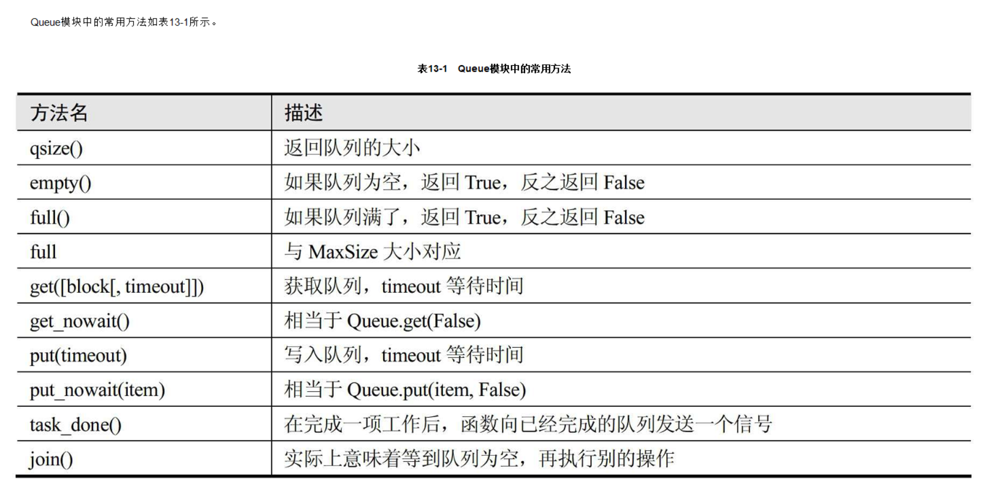

Contents
16.1. 进程¶
16.1.1. multiprocessing模块¶
multiprocessing模块是跨平台版本的多进程模块。Linux上支持os.fork()，windows上使用multiprocessing
multiprocessing模块提供了一个Process类来代表一个进程对象
#!/usr/bin/env python
# -*- coding:utf8 -*-
'''
创建子进程时，只需要传入一个执行函数和函数的参数，创建一个Process实例，用start()方法启动，这样创建进程比fork()还要简单。
join()方法可以等待子进程结束后再继续往下运行，通常用于进程间的同步。
'''
from multiprocessing import Process
import os
# 子进程需要执行的代码
def run_proce(name):
print("Run child process %s (%s)" % (name, os.getpid()))
if __name__ == '__main__':
print("Parent process %s." % os.getpid())
p = Process(target=run_proce, args=("test",))
print("Child process will start.")
p.start()
p.join()
print("Child process end.")
import os
import multiprocessing
def foo(i):
# 同样的参数传递方法
print("这里是 ", multiprocessing.current_process().name)
print('模块名称:', __name__)
print('父进程 id:', os.getppid()) # 获取父进程id
print('当前子进程 id:', os.getpid()) # 获取自己的进程id
print('------------------------')
if __name__ == '__main__':
for i in range(5):
p = multiprocessing.Process(target=foo, args=(i,))
p.start()
说明
- 创建子进程时，只需要传入一个执行函数和函数的参数，创建一个Process实例，用start()方法启动，这样创建进程比fork()还要简单。
- join()方法可以等待子进程结束后再继续往下运行，通常用于进程间的同步。
join()方法的使用¶
#!/usr/bin/env python
#-*- coding:utf8 -*-
from multiprocessing import Process
import time
import os
def child_1(n):
print("子进程({})开始执行，它的父进程是({})".format(os.getpid(),os.getppid()))
t_start = time.time()
time.sleep(n)
t_end = time.time()
print("子进程（{}）执行时间为%0.2f秒".format(os.getpid(), t_end-t_start))
def child_2(n):
print("子进程({})开始执行，它的父进程是({})".format(os.getpid(), os.getppid()))
t_start = time.time()
time.sleep(n)
t_end = time.time()
print("子进程（{}）执行时间为%0.2f秒".format(os.getpid(), t_end - t_start))
def main1():
print("主进程开始")
print("主进程的PID；{}".format(os.getpid()))
p1 = Process(target=child_1, args=(1,))
p2 = Process(target=child_2, args=(2,))
p1.start()
p2.start()
print("p1.is_alive={}".format(p1.is_alive()))
print("p2.is_alive={}".format(p2.is_alive()))
print("p1.name={}".format(p1.name))
print("p1.id={}".format(p1.pid))
print("p2.name={}".format(p2.name))
print("p2.id={}".format(p2.pid))
#使用join函数之后，主进程会等待子进程结束之后才继续往下执行
p1.join()
p2.join()
print("主进程结束..")
if __name__ == '__main__':
main1()
16.1.2. Process子类创建进程¶
#!/usr/bin/env python
#-*- coding:utf8 -*-
from multiprocessing import Process
import time
import os
class SubProcess(Process):
def __init__(self,interval,name=''):
super(SubProcess, self).__init__()
self.interval = interval
if name:
self.name = name
def run(self):
print("子进程({})开始执行，它的父进程是({})".format(os.getpid(), os.getppid()))
t_start = time.time()
time.sleep(self.interval)
t_end = time.time()
print("子进程（{}）执行时间为{:.2f}秒".format(os.getpid(), t_end - t_start))
def main1():
print("主进程开始")
print("主进程的PID；{}".format(os.getpid()))
p1 = SubProcess(interval=1, name="mrsoft")
p2 = SubProcess(interval=2)
# 调用start()方法时会自动执行run()方法
p1.start()
p2.start()
print("p1.is_alive={}".format(p1.is_alive()))
print("p2.is_alive={}".format(p2.is_alive()))
print("p1.name={}".format(p1.name))
print("p1.id={}".format(p1.pid))
print("p2.name={}".format(p2.name))
print("p2.id={}".format(p2.pid))
#使用join函数之后，主进程会等待子进程结束之后才继续往下执行
p1.join()
p2.join()
print("主进程结束..")
if __name__ == '__main__':
main1()
16.1.3. 使用进程池Pool创建进程¶
from multiprocessing import Pool
import os
import time
def task(name):
print("子进程 ({})执行的任务是 ({})".format(os.getpid(),name))
time.sleep(1)
if __name__ == '__main__':
print("父进程 ({})开始执行".format(os.getpid()))
p = Pool(4)
for i in range(10):
p.apply_async(task, args=(i,))
p.close()
p.join()
print("所有子进程结束.....")
16.1.4. 进程间通信¶
· Python提供了多种进程间通信的方式，例如Queue、Pipe、Value+Array等
Queue和Pipe的区别在于
·Pipe常用来在两个进程间通信
·Queue用来在多个进程间实现通信。
Queue多进程队列的使用¶
- Queue模块可以用来进行线程间的通信，让各个线程之间共享数据。
- Python的Queue模块提供了同步、线程安全的队列类， 包括FIFO（先入先出）队列Queue、LIFO（后入先出）队列LifoQueue和优先级队列PriorityQueue。 这些队列都实现了锁原语，能够在多线程中直接使用。可以使用队列实现线程间的同步。

#!/usr/bin/env python
#-*- coding:utf8 -*-
'''
Queue模块可以用来进行线程间的通信，让各个线程之间共享数据。
Python的Queue模块提供了同步、线程安全的队列类，
包括FIFO（先入先出）队列Queue、LIFO（后入先出）队列LifoQueue和优先级队列PriorityQueue。
这些队列都实现了锁原语，能够在多线程中直接使用。可以使用队列实现线程间的同步。
'''
from multiprocessing import Queue
if __name__ == '__main__':
q = Queue(3) # 设置队列的大小
q.put("消息1")
q.put("消息2")
print("队列是否已满：{}".format(q.full()))
q.put("消息3")
print("队列是否已满：{}".format(q.full()))
# try:
# q.put("消息4",block=True,timeout=2) # 添加消息队列时候等待2s
# except:
# print("消息队列已满，现有消息数量为{}".format(q.qsize()))
try:
q.put_nowait("消息4") #添加消息队列不需要等待
except:
print("消息队列已满，现有消息数量为{}".format(q.qsize()))
if not q.empty():
print("从队列中取消息".center(100, "*"))
for i in range(q.qsize()):
print(q.get_nowait())
if not q.full():
q.put("消息4")
print(q.qsize())
代码示例1¶
#!/usr/bin/env python
# -*- coding:utf8 -*-
from multiprocessing import Process, Queue
def f(test):
test.put("22")
if __name__ == '__main__':
q = Queue() # 父进程
q.put("11")
p = Process(target=f, args=(q,)) # 子进程
p.start()
p.join()
print("取到： ", q.get_nowait())
print("取到： ", q.get_nowait())
代码示例2¶
#!/usr/bin/env python
# -*- coding:utf8 -*-
# auther; 18793
# Date：2020/2/26 10:55
# filename: 进程间通信01.py
from multiprocessing import Process, Queue
import os, time, random
# 写数据进程执行的代码
def proc_write(q, urls):
print('Process(%s) is writing...' % os.getpid())
for url in urls:
q.put(url)
print('Put %s to queue...' % url)
time.sleep(random.random())
# 读进程执行的代码
def proc_read(q):
print('Process(%s) is reading...' % os.getpid())
while True:
url = q.get(True)
print('Get %s from queue.' % url)
if __name__ == '__main__':
# 父进程创建Queue，并传给各个子进程
q = Queue()
proc_writer1 = Process(target=proc_write, args=(q, ['url1', 'url2', 'url3']))
proc_writer2 = Process(target=proc_write, args=(q, ['url4', 'url5', 'url6']))
proc_reader = Process(target=proc_read, args=(q,))
# 启动子进程proc_writeer 写入
proc_writer1.start()
proc_writer2.start()
# 启动子进程proc_reader,读取
proc_reader.start()
# 等待子进程proc_writer结束
proc_writer1.join()
proc_writer2.join()
# proc_reader进程里是死循环，无法等待其结束，要强行终止
proc_reader.terminate()
"""
Process(10608) is writing...
Put url1 to queue...
Process(7808) is writing...
Put url4 to queue...
Process(13840) is reading...
Get url1 from queue.
Get url4 from queue.
Put url5 to queue...
Get url5 from queue.
Put url2 to queue...
Get url2 from queue.
Put url6 to queue...
Get url6 from queue.
Put url3 to queue...
Get url3 from queue.
"""
代码示例3¶
#!/usr/bin/env python
#-*- coding:utf8 -*-
from multiprocessing import Process,Queue
import time
'''
2个子进程在队列中进行写入和读取数据，实现进程之间的通信
'''
def write(q):
if not q.full():
for i in range(5):
message = "消息" + str(i)
q.put(message)
print("写入:{}".format(message))
def read(q):
time.sleep(1)
while not q.empty():
print("读取:{}".format(q.get(True,2)))
if __name__ == '__main__':
print("主进程开始".center(100,"*"))
q = Queue()
pw = Process(target=write, args=(q,))
pr = Process(target=read, args=(q,))
pw.start()
pr.start()
pw.join()
pr.join()
print("主进程结束".center(100,"*"))
Pipe常用来在两个进程间进行通信，¶
两个进程分别位于管道的两端。 Pipe方法返回（conn1，conn2）代表一个管道的两个端。
Pipe方法有duplex参数，如果duplex参数为True（默认值），那么这个管道是全双工模式，也就是说conn1和conn2均可收发。
若duplex为False，conn1只负责接收消息，conn2只负责发送消息。
send和recv方法分别是发送和接收消息的方法。
例如，在全双工模式下，可以调用conn1.send发送消息，conn1.recv接收消息。
如果没有消息可接收，recv方法会一直阻塞。如果管道已经被关闭，那么recv方法会抛出EOFError。
#!/usr/bin/env python
# -*- coding:utf8 -*-
# auther; 18793
# Date：2020/2/26 11:08
# filename: sample01.py
import multiprocessing
import random
import time, os
def proc_send(pipe, urls):
for url in urls:
print("Process(%s) send :%s" % (os.getpid(), url))
pipe.send(url)
time.sleep(random.random())
def proc_recv(pipe):
while True:
print("Process(%s) rev:%s" % (os.getpid(), pipe.recv()))
time.sleep(random.random())
if __name__ == '__main__':
pipe = multiprocessing.Pipe()
p1 = multiprocessing.Process(target=proc_send, args=(pipe[0], ["url_" + str(i) for i in range(10)]))
p2 = multiprocessing.Process(target=proc_recv, args=(pipe[1],))
p1.start()
p2.start()
p1.join()
p1.join()
p2.terminate()
"""
Process(17008) send :url_0
Process(13264) rev:url_0
Process(17008) send :url_1
Process(17008) send :url_2
Process(13264) rev:url_1
Process(17008) send :url_3
Process(17008) send :url_4
Process(13264) rev:url_2
Process(17008) send :url_5
Process(13264) rev:url_3
Process(17008) send :url_6
Process(17008) send :url_7
Process(13264) rev:url_4
Process(13264) rev:url_5
Process(17008) send :url_8
Process(17008) send :url_9
Process(13264) rev:url_6
"""